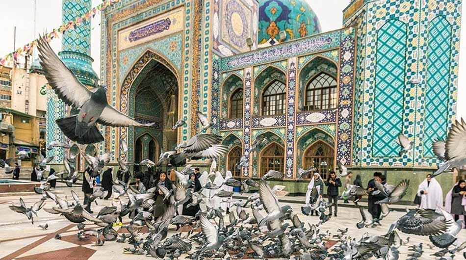
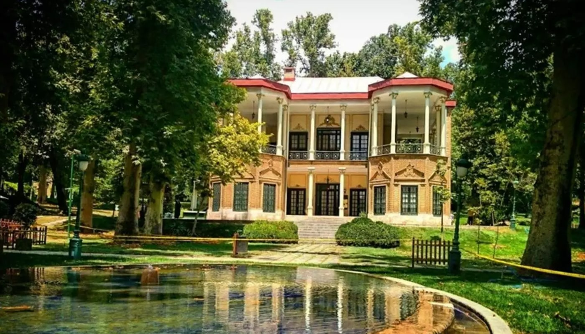
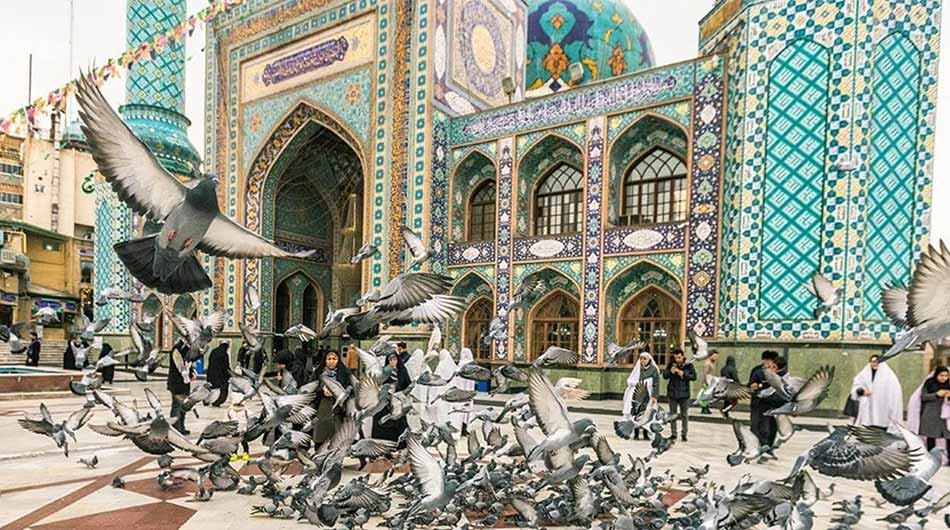
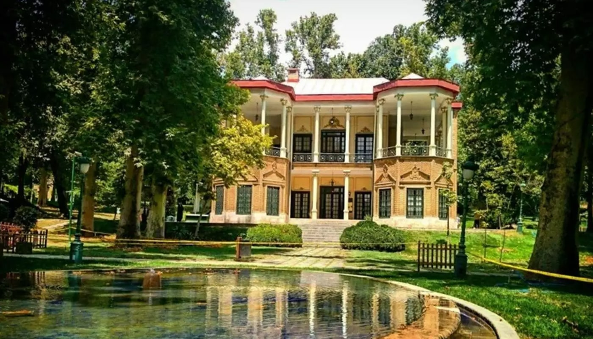

Tehran province (Persian: استان تهران Ostān-e Tehrān) is one of the 31 provinces of Iran.
It covers an area of 18,814 square kilometres (7,264 sq mi) and is located to the north of the central plateau of Iran.
At the time of the National Census of 2006, the province had a population of 13,281,858 in 3,729,010 households.
The following census in 2011 counted 12,183,391 people in 3,731,480 households, by which time Karaj, Nazarabad, and Savojbolagh Counties had been separated from the province to become Alborz province.
The province was made a part of the First Region with its secretariat located in Tehran, upon the division of the provinces into 5 regions, solely for coordination and development purposes on June 22, 2014.
According to the latest census in 2016, the population of the province had increased to 13,267,637 in 4,288,563 households.
Tehran province borders Mazandaran province in the north, Qom province in the south,
Semnan province in the east, Alborz province in the west and Markazi province in the southwest.
The metropolis of Tehran is the capital city of the province and of Iran.
Tehran province is the richest in Iran, as it contributes approximately 29% of the country's gross domestic product (GDP).
Furthermore, it houses approximately 18% of the country's population and is the most industrialized province in Iran, with nearly 94% of its residents living in the cities as of 2016.
The province gained importance when Tehran was proclaimed the capital by the Qajar dynasty in 1778.
Today, Tehran, with a population of 14 million, is ranked amongst the 40 most populous metropolitan cities of the world.
Tehran or Teheran
, capital and largest city of Iran, and capital of Tehran province, is located in the northern part of the country. Tehran is Iran's administrative, economic,
and cultural centre as well as the major industrial and transport centre of the region. The city sits on the slopes of the Elburz Mountains, about 1,173m above sea level,
on the northwestern fringes of the Kavir desert. Although the name Tehran means "warm place", the climate has marked seasonal contrasts, with short springs and autumns separating cold winters and hot, dry summers.
Tehran is one of the largest urban centres in the Middle East. In the 1980s the metropolitan region grew rapidly, partly due to surging birthrates following the 1979 Islamic Revolution,
but also because of increased migration from rural to urban areas, as well as an influx of refugees from the Iran-Iraq War and fighting in Afghanistan. The density of the inner city forced many of these migrants to settle in outlying areas.
The aim of these images acquired by the Landsat family, with a time window (before/after) of 28 years, is to show how Tehran has changed since 1988. The skyline of the city has developed with new areas constructed,
particularly in the north west of the city and new infrastructure; such as the area where the airport is now located in the south.
Another aim of these images is to promote the opportunity to download Landsat data through the ESA portals (or third party mission free catalogue), where images captured every day are made available in near real time to the users and the scientific community.


 


